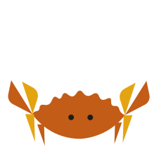
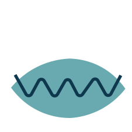
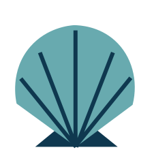
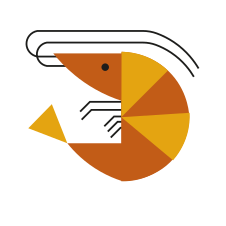
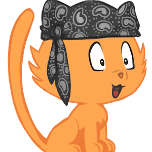

Peut-on RIIR de tout ?







Bonjour,
Suite à notre audit de sécurité régulier et l'analyse de votre BOM (Bill of Materials), j'ai identifié que votre projet utilise GDAL 3.10.x.
Une vulnérabilité critique vient d'être publiée :
🔴 CVE-2026-4738 - Score CVSS 4.0 : 9.4/10
frmts/zlib/contrib/infback9)E:A)⚠️ Action requise : Mise à jour urgente ou mitigation
Cordialement,
Rowan O'Wasp - RSSI
Consider migrating from GDAL to "safer" language
Given the recent CVE-2026-4738 critical vulnerability in GDAL (CVSS 9.4), I believe we should seriously consider migrating to a Rust-based alternative or another "safer" language.
Use existing crates referenced in GeoRust, and add create missing one.
✅ Memory safety by design
✅ Better performance (no GC)
✅ Simpler deployment
🤔 Thoughts?